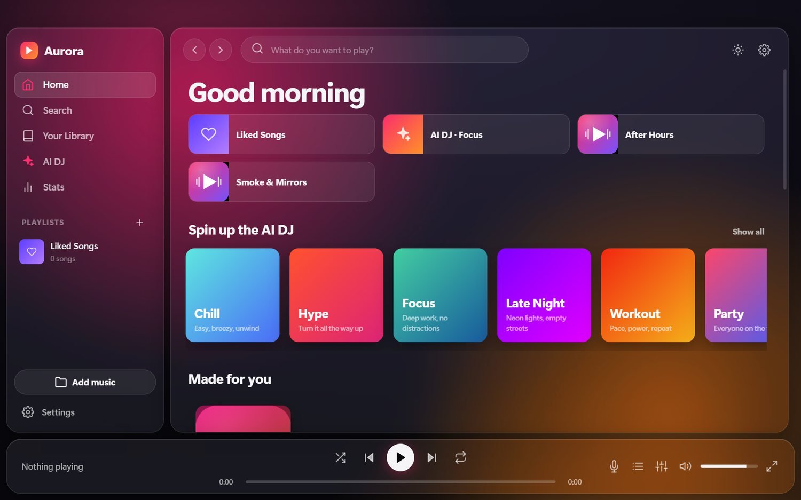
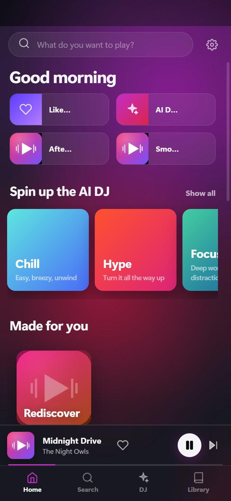
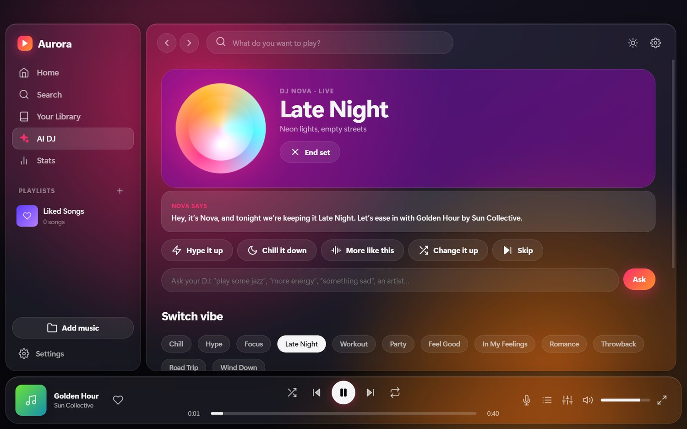
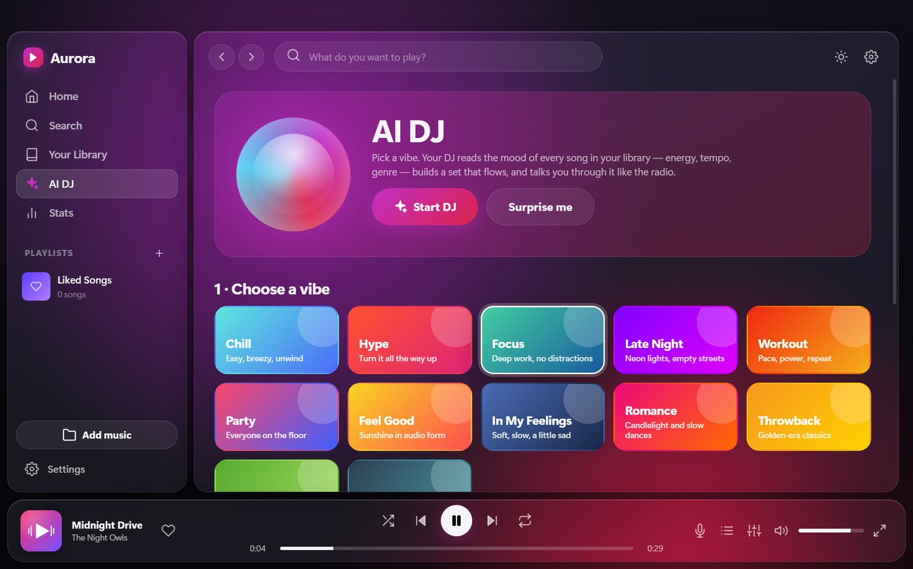

Your music,
beautifully played.
Aurora plays the songs already on your phone or PC, in a glass-smooth player with an AI DJ that mixes by mood. No accounts, no ads, no uploads. Your music never leaves your device.


Everything you expect, and a few things you don’t.
A familiar layout (library, search, queue, playlists) wrapped in a calm, colourful design that follows your album art.
Plays from your folder, never copies
Pick your music folder once. Aurora reads the songs right where they are, so there is no duplicate storage and no waiting for an import.
AI DJ
Choose a vibe and your DJ builds a flowing set from your own library, talks between songs, and takes requests.
Album covers, automatically
Uses the picture in the file or a cover.jpg in the folder. If there is none, it finds one online once and saves it.
Notification-bar & lock-screen player
On Android: controls, cover art and a seek bar in the notification shade, on the lock screen and in Samsung’s media panel. Music keeps playing in the background.
Queue, playlists, likes
Play next, add to queue, drag to reorder, shuffle, repeat, endless “radio” from any song, and Liked Songs.
Made-for-you mixes
Daily Mixes, On Repeat, Rediscover, decade throwbacks and mood mixes, generated on your device from your own listening.
Synced lyrics
Drop .lrc files next to your songs and the current line glows as it plays. Plain lyrics work too.
Sound controls
Crossfade, volume normalisation, playback speed, sleep timer, and a 10-band equalizer with presets on the web and Windows apps.
Listening stats
See your top songs, artists, genres and listening clock, plus a playful “listening personality”. All computed on your device.
Light & dark, your colours
Dark and light themes, accent colours that follow the artwork or stay fixed, and adjustable glass blur.
Over-the-air updates
New versions arrive by themselves. Aurora tells you what changed and asks before installing.
Picks up where you left off
Close the app and come back: your queue, song and position are exactly as you left them.
A DJ that knows your library.
Aurora listens to your songs on your device, measuring energy, tempo and mood, then builds a set that flows from one track to the next.
- Talks like the radio. Short spoken intros between songs, with the music lowered while it speaks. Pick Smooth, Hype or Zen.
- Takes requests. Type “play some jazz”, “more energy” or an artist’s name, or tap Hype it up / Chill it down / More like this.
- Private by design. The mood analysis happens on your device. Optionally add your own AI key for richer patter; only song and artist names are sent.
- Your call. One switch in Settings turns the whole DJ off.

One app, three homes.
The same design and the same features, built to feel native on each device.
Android
Folder linking, notification-bar and lock-screen player, background playback, phone text-to-speech for the DJ. Closing it from the app switcher really closes it.
Get the APKWindows
A proper installer, desktop layout, media keys, equalizer and visualizer, and a folder you pick once.
Get the installerWeb
Runs in any modern browser and installs like an app. Chrome and Edge can link a music folder directly.
Open Aurora
Free, open, and honest about what it does.
Aurora is open-source software under the MIT licence. Anyone can read the code, build it themselves, or suggest changes. It is an independent project with its own code.
- Open source. Every line is on GitHub. Nothing is hidden, so nothing has to be taken on trust.
- No accounts, ads or tracking. There is no analytics code and nothing to sign up for.
- Your songs stay on your device. Aurora reads them read-only, from the folder you choose. They are never uploaded and never copied. On Android you can take access back at any time in the phone’s settings.
- Verifiable downloads. The Android app is signed with the Aurora release key, and the SHA-256 checksum of every release is published on the Downloads page so you can check your file is untouched.
- You can delete everything. “Clear library” and “Reset to defaults” are in Settings; uninstalling removes all app data.
Fair warning: Aurora has not had a third-party security audit, and the Windows installer is not yet code-signed, so Windows SmartScreen may show a caution the first time. Checking the checksum on the Downloads page is the quickest way to be sure the file is genuine.
| Connection | Why | What is sent |
|---|---|---|
| kailashamarnath.me (this site) | Check for a newer version of Aurora | Nothing about you; it just downloads a small update list |
| itunes.apple.com | Find a missing album cover (once per album, then saved) | Artist and album names. Can be turned off in Settings |
Those are the only connections Aurora makes on its own. Your music, playlists, play history and settings stay on your device.
Ready to hear your library differently?
Download Aurora, point it at your music folder, and press play.